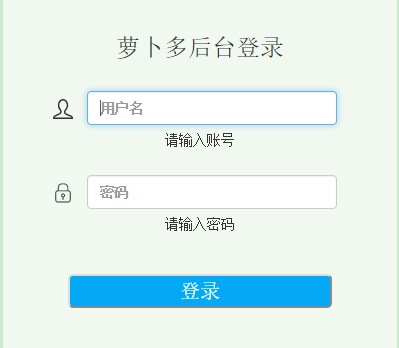
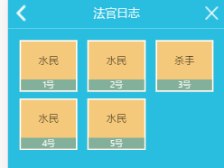

萝卜多：一个SPA模式的招聘类网站。使用AngularJs1框架进行脚本编写，Bootstrap框架渲染样式和布局。使用JQuery库中的懒加载插件，对网页中写死的图片进行延迟加载，改善了初始浏览速度。使用AngularJs中的懒加载插件，加载各页面的样式文件等依赖文件，优化浏览速度。使用语义化的标签编写页面结构文件等。
在线演示提示：本演示非最终稿，非官方最终上线版本。

萝卜多后台：使用同前台相同的脚本框架和样式、布局框架。实现公司信息、职位信息，以及其他数据的增删改查等功能。
在线演示提示：本演示非最终稿，非官方最终上线版本。用户名：ceshi，密码：123456。

杀人游戏：一个简单的移动端杀人小游戏，分配有杀手和平民两个角色，分为投票杀人和杀手杀人两个步骤。使用了H5中的sessionStorage实现页面间数据的传输和清除数据，配合原生JS和JQuery库进行页面的渲染工作。目前还有不足之处，正在努力改进中！
在线演示提示：还有不足，持续改进中！请点击简单版进入！